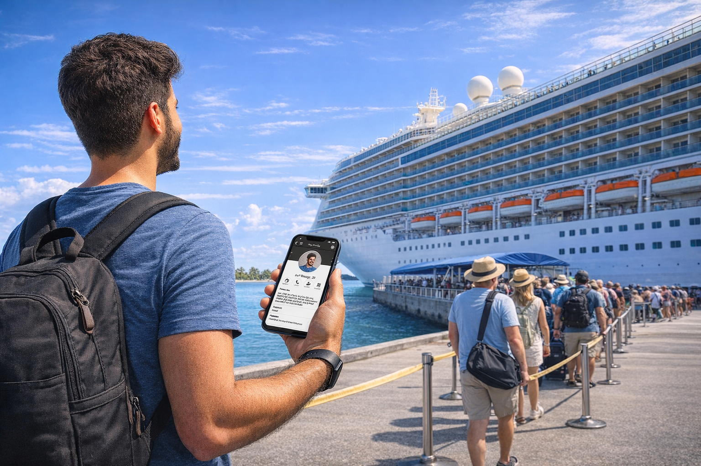
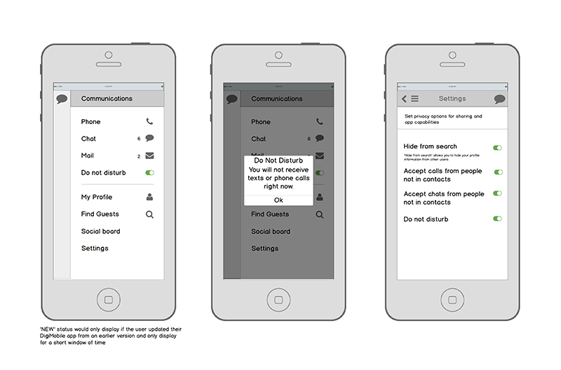

Communication feature
Case Study
Role
- Lead UX Designer
Team
- Engineering, Design, QA, Cruise Implementation
Scope
- Integrated core feature into platform
Context
The core cruise application required a new social communication feature that could scale across vessels, routes, and device types while operating within a managed but bandwidth-constrained ship network. The challenge was not just feature delivery — it was introducing this capability without fragmenting the existing UI architecture.
The environment required strict UI consistency, optimization of design artifacts to minimize app update size in the app stores, and close coordination between interaction design decisions and frontend implementation.

Delivered a scalable social feature integrated into the existing UI architecture without introducing system fragmentation.
Problem Framing
Introduced a new social feature without creating UI debt, component drift, or performance regressions.
The system needed to extend the design language while preserving component consistency, layout rhythm, and data rendering patterns across new and existing modules.

(image credit: Royal Caribbean International)
Reduced UI debt risk, maintained design–code alignment, and strengthened long-term frontend sustainability.
Infrastructure Constraints
Designed within constrained network and performance limitations.
Established constraints:
- Standardized avatar ratios and thumbnail dimensions
- Defined profile layout rules for consistent rendering
- Controlled asset weight to preserve network performance
- Maintained cross-platform consistency across ships and builds
Ensured profile components were systemized rather than one-off implementations, reducing long-term maintenance overhead.
Data & Component Architecture
Systemized profile components and modular layout structures.
Established modular layout structures that could support future social extensions without redesigning the system.
Design–Code Integration
Ensured component integrity and implementation alignment
Component behavior was validated against real data states to ensure UI patterns remained stable under edge cases and did not require downstream overrides. Continuous feedback loops between design specifications and implementation maintained alignment, reducing inconsistencies prior to release.
Outcome
Established a reusable social UI module that supported future feature expansion while preserving performance and consistency.
The outcome was reduced UI debt risk while maintaining design–code alignment, as well as strengthening long-term frontend sustainability. When we introduced this feature, the goal wasn’t just to ship something new—it was to protect the integrity of the system you had already invested in. We integrated the social layer without fragmenting the existing UI architecture, preserving consistency across modules and ships. By systemizing component structures and validating them against real data states, we reduced implementation ambiguity and prevented visual drift before release. The result is a scalable foundation that supports future expansion while maintaining performance, clarity, and trust in the product experience.
//